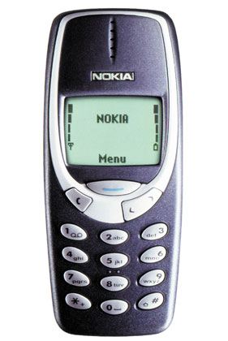
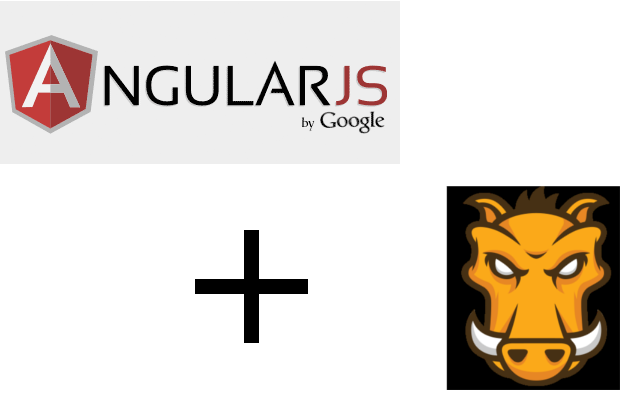

#jolealdoneto
#tadodevmeeting
06.05.2013 already! OMG!
Since we were talking about testing..
I'll tell you what we use in the mobile development

Top-device in the mobile-development department
Top-device in the mobile-development department
Before..
Manual testing =/

The JavaScript Task Runner
It allows you to do stuff like..
it('Can accomplish the login procedure', function() {
...
});
it('Switch to the manual mode and change the manual temp', function() {
...
});
it('Setting the schedule', function() {
...
});
Cool, huh?!
Why AngularJS?
- Because of angular's dependency injection, it's very easy to mock all the objects
- And this is provided out-of-the-box by the angular-mock.js
LoginCtrl = _$controller('LoginCtrl', {
$scope: scope
});
scope.login = 'simulator';
scope.password = 'simulator';
$httpBackend.expectGET(/getAppUsers\?.*&password=.+&username=.+/gi).respond({success: true, appUsers: [ {nickname: 'Jose'}, { nickname: 'EnergyBob'} ], currentUserId: 11});
$httpBackend.expectGET(/chooseDeviceType/g).respond({});
scope.doLogin();
$httpBackend.flush();
// instantiate
ChooseDeviceTypeCtrl = _$controller('ChooseDeviceTypeCtrl', {
$scope: scope
});
// set as phone
scope.setDeviceType('phone');
// instantiate
ChooseUserCtrl = _$controller('ChooseUserCtrl', {
$scope: scope
});
expect(UserCredentials.appUsers.length).toEqual(2);
scope.nicknamechosen = 'EnergyBob';
scope.checkIfExists();
// exists
expect(scope.buttonFlag).toBe(true);
scope.nicknamechosen = 'Im not in the list!';
scope.checkIfExists();
expect(scope.buttonFlag).toBe(false);